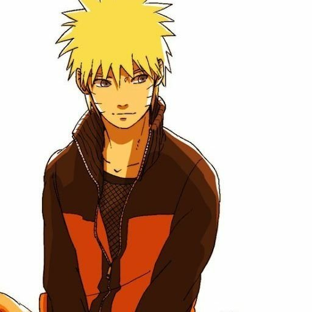

Ramil
Web Developer • Turin Polytechnic University
Turin Polytechnic (Student)
Toshkent
17/03/1994
Turin Politexnika Universiteti talabasi, zamonaviy veb-texnologiyalar va estetik foydalanuvchi interfeyslari yaratuvchi Web Developer. 🍃🔥
Telegram Kanal / Profil
@Ramil91_ui • Dasturlash va blog
GitHub Repozitoriylar
github.com/Ramil91-ui • Ochiq kodli loyihalar
Web Portfolio & Loyihalar
Veb-dasturlash keyslari va loyihalar
YouTube Kanal
Dasturlash va foydali videoroliklar
Instagram Sahifa
Hayotiy lahzalar va dizayn
Bog'lanish / Hamkorlik
ramilroberts91@gmail.com